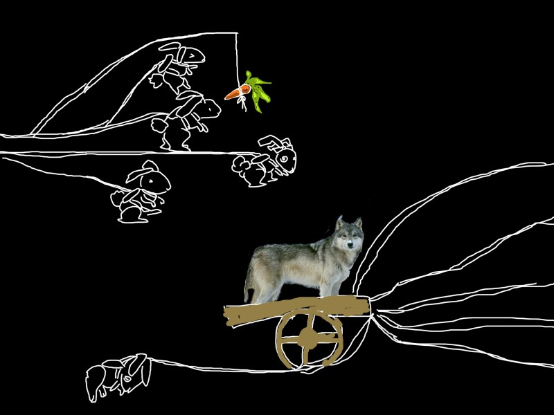

大灰狼的旅行
作者： 、 ; 图：
天刚蒙蒙亮，大灰狼用他那健硕的5只兔子套好小车，要准备出发了
大灰狼此行并没有多少人知道，但似乎他做了很多年的准备，不过一直是在心里
也许这是一趟不归的旅程，他走在小车前头，一一捋了捋兔子的大耳朵
驾！！！5只兔子简直是同时登起后脚，唰地一声将小车拉起，车头的大灰狼扬起长鞭，严肃地看着前方，根本没有往回看一眼的念头
此时已是深秋，或是进冬了，路边的枯草覆盖着昨夜的霜，朦朦的水雾打在大灰狼的脖子里
他下意识地裹了裹衣领，冬天，往北走的确很冷
大灰狼要一直往北走，他要绕道大卡山，大卡山在西北边，因为直往北会经过繁华城市京来，他是不会在京来浪费时间的
大卡山不是一座山，就像喜马拉雅山不是一座山，而且连绵不绝的丘陵地带，那里长年风吹日晒，几乎是不毛之地
想必这时也是冰冷之地，但大卡山也是有人住的，上帝还是给予这片土地一些爱
大卡山多有精铜，又常无人看管，所以生出了很多的帮派，或者称之为匪，出名的有栖山匪、路海匪，还有情人匪，情人匪里全是女的人，她们穿着不好辨别
大灰狼兔子拉的车能否顺利穿过大卡山呢？？
一定是会的，因为他要穿过大卡山，之后在横渡充满飞禽的大草原，最后深入黑暗森林
黑暗森林是他的目的地，他到那里是找一个戴着帽子的侠者，他的名字是一个单字:风，他要把小车和兔子交给风……
一路上并没有其它的生物，只有一排排奇怪的树，不长叶子的树，也许叶子是被很早以前那次大饥荒中的人们捋下来吃光了，但它们怎么可以和平年代都不长叶子呢？
后来他才知道，在这种树看来，既然有一次大饥荒，就有第二次大饥荒；既然叶子可以被吃一次，也会被吃第二次。为了防止再次被人类粗鲁地捋光光，它们决定以后都不长叶子了。于是人们把这种树叫作懒树。
但是，听说有一个人可以使懒树看一眼就愿意长出新鲜的叶子，这个人，万物皆称“观容叹止”，他，就是容止。
容止其实原本叫慕容止，和江湖上传闻“冷面侠客”的慕容是亲兄弟，只不过，在最近的一次江湖势力重新洗牌时，容止因其美貌给慕容家带来了灾难而被驱逐出家门，其弟慕容也因求情而被关小黑屋。想来，慕容家族不仅不能为家人遮风挡雨，反而做出这等无情之事，被江湖豪杰纷纷唾弃也是情有可原的。
【大坑，走过路过不要错过，求求你，给俺们收了这场戏吧...orz...】